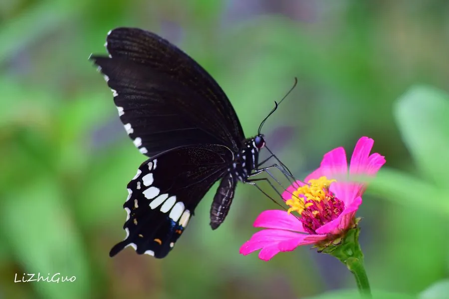

昆虫 · 动物界
玉带凤蝶 Papilio polytes

雄蝶后翅有一条白色玉带斑，雌蝶多型并拟态有毒蝶类，是亚洲常见的大型凤蝶，幼虫取食柑橘类植物。
- 分类
- 门节肢动物门纲昆虫纲目鳞翅目科凤蝶科属凤蝶属
- 栖息环境
- 柑橘园、林缘与庭院，寄主植物附近的花丛
- 地理分布
- 中国南方、日本、东南亚和印度等地
- 保护级别
- 暂无评估
物种志
玉带凤蝶翅展约 7–9 cm，雄蝶通体黑色，后翅中部有一列白斑组成玉带状横带，因此得名；雌蝶有多个色型，有的拟态红珠凤蝶等有毒种类，翅面呈红褐或白斑状，与雄蝶差别极大。后翅有细长尾突，边缘呈波浪状，翅反面斑纹较淡。
成虫常在花丛和柑橘园附近访花，飞行缓慢优雅。雌蝶把卵产在柑橘、柚、两面针等芸香科植物上，幼虫取食叶片，受惊时翻出臭角。它一年发生 2–5 代，以蛹越冬，是中国南方最常见的凤蝶之一，也分布于日本、东南亚和印度。雌蝶的多型拟态是研究贝氏拟态的经典材料：不同色型模仿当地不同的有毒蝶类，从而降低被鸟类捕食的风险。
形态与习性
- 食性幼虫取食柑橘、柚、两面针等芸香科叶片；成虫吸蜜
- 翅展约 7–9 cm
- 多型雌蝶有多种色型，部分拟态有毒蝶类
- 生活史一年发生 2–5 代，以蛹越冬
- 繁殖雌蝶在芸香科嫩叶上产卵
- 习性成虫访花，飞行缓慢优雅
趣味知识
- 玉带凤蝶雄蝶后翅的白斑排列成一条完整的玉带。
- 雌蝶会模仿有毒的红珠凤蝶，鸟类因此不敢捕食。
- 同一地区的玉带凤蝶雌蝶可能有几种完全不同的花纹。